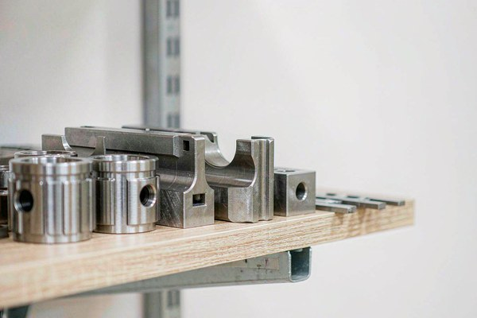
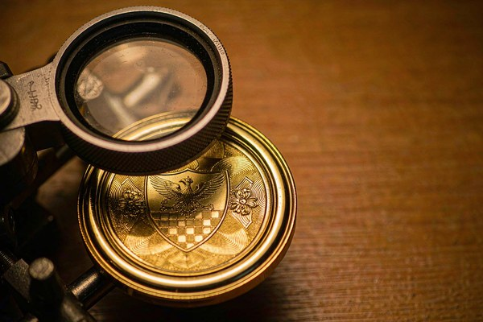

What a Mold (Die) Actually Is in Coin Manufacturing
Strip away the terminology and a challenge coin is a piece of metal that has been squeezed between two extremely hard surfaces until it takes their shape. Those surfaces are the die. Each one is a solid block of hardened steel, engraved with your artwork in mirror image, then heat-treated until it can deform metal blanks thousands of times without losing its detail.
Cutting a die is not a printing job. It is a precision machining process. A skilled engraver works from your artwork to produce a master, that master is transferred to the steel, and the fine details — the edges of lettering, the ridges between enamel fields, the depth of a relief — are cut to tolerances far tighter than anything visible on a screen. The die is then hardened, and a test strike is run to confirm the impression is clean before production begins.
That test strike is worth pausing on, because it is the reason tooling exists as a separate line at all. Before you spend money on a thousand coins, someone has to prove the die actually produces the coin you approved. Mounting, striking, inspecting, and adjusting is real work, and it happens once per die.
A note on vocabulary, since it causes more confusion than it should. In challenge coin manufacturing, mold and die are used interchangeably, and both refer to the stamping tool. Strictly speaking a die is used for striking metal under pressure while a mold is used for casting metal that is poured in molten — coins are struck, not cast, so the technically correct word is die. Suppliers will understand either, and your quote may say "mold charge," "die charge," or "tooling" and mean exactly the same thing.
When You Pay a Mold Fee and When You Don't
The fee is tied to a single question: does a die for this exact coin already exist? Everything else follows from that.
You pay a mold fee when the tool does not yet exist. A brand-new design, your first order of any kind, a change to the artwork, a different diameter, a new shape, a deeper relief, or a switch from single-sided to double-sided production all require new tooling. So does moving to a supplier who does not have your die.
You should not pay a mold fee in these situations:
- Reordering an identical design while the original die is still stored. Same artwork, same size, same shape — no new tool is needed, so no new charge is justified.
- Your supplier already holds the die from a previous order, even if you placed that order through a different contact person at the same company.
- The fee has been absorbed by the supplier as part of a larger order. Many manufacturers waive tooling above a quantity threshold — commonly around 500 pieces — because the run carries enough margin to cover it.
The complication is that the second and third cases depend entirely on what your supplier chose to write down, and most quotes do not state it. That is the gap this article exists to close.
How Much Is a Challenge Coin Mold Fee?
The die itself costs roughly the same to cut regardless of how many pieces you order, so the fee does not scale with the size of your run. What changes the number is how complex the tool has to be.
| Coin Type | Typical Mold Fee (2026, factory-direct) | Why It Lands There |
|---|---|---|
| Standard single-sided, 1.75", simple relief | $80 – $150 | One die, straightforward engraving, no sculpting stage |
| Double-sided (separate tool for each face) | $150 – $300 | Two dies must be cut, hardened, and proofed independently |
| 3D relief with sculpting | $250 – $600 + | A dimensional model must be built before the die can be engraved |
| Irregular shape or cut-out | Higher, quoted per design | Non-round tooling and additional trim steps |
| Oversized coin (2.5" and above) | Higher, quoted per design | Larger steel block, higher press pressures, longer engraving time |
These are indicative factory-direct ranges for 2026 and assume clean, production-ready artwork. They are meant as a sanity check when you read a quote, not as a firm price — your design, size, and relief depth move the number, and a supplier quoting far outside these bands deserves a specific explanation of why.
Two things are worth noticing here. First, the double-sided figure is not double the single-sided figure, because the second die is cut from an approved design rather than a fresh brief. Second, the jump to 3D is the largest in the table, and it is not really about the die at all — it is about the sculpting work that has to happen before anyone can think about steel.
For how tooling fits into the total cost of an order, including how it spreads across quantity tiers, see our full breakdown of what challenge coins cost.
How Long a Mold Is Stored and Why That Matters for Reorders

This is the section that saves people the most money, and it is the one nobody explains upfront.
Because a die is a durable physical tool, it survives long after your order ships. Manufacturers keep dies in storage with identification tags, which means the expensive part of a reorder is already paid for. Order the same coin again eighteen months later and there should be no tooling charge — the die is lifted off the shelf, mounted, and run.
How long that shelf space is promised to you varies a great deal:
- Two to three years is the common industry standard, and the figure most buyers assume they are getting.
- Indefinite storage is offered by some makers, particularly for organizations that reorder regularly and represent steady repeat business.
- Twelve months or less appears in some smaller operations that need the warehouse space, after which the die may be scrapped.
- No stated policy at all is the most common answer, and the most dangerous one — it means the retention period is whatever is convenient when you call.
The practical move is straightforward. Ask the retention period before you pay the fee, and get the answer in writing on the quote or order confirmation. Then note the date somewhere you will actually see it. A mold that is quietly scrapped at month thirteen, six months before you planned to reorder, converts a routine reorder into a full tooling charge — and nothing about that outcome was inevitable.
If your organization knows it will reorder, say so when you place the first order. Suppliers make storage decisions with future volume in mind, and a buyer who signals a multi-year program gets treated differently from one placing a single speculative order.
Mold Fee vs Setup Fee: The Difference Most Buyers Miss
Quotes frequently lump several one-time charges together, and the most common confusion is between the mold fee and the setup fee. They sound similar and they behave very differently, which matters enormously at reorder time.
The mold fee buys a durable asset. It is the die, it is physical, it belongs to someone, and it can be used again for years. The setup fee buys labor and machine time that cannot be reused. Mounting the die in the press, calibrating pressure, adjusting the plating line for a new batch, and running the first-article inspection are all work that has to happen every time a job is scheduled.
| Charge | What You Are Buying | Reusable? | Applies on a Reorder? |
|---|---|---|---|
| Mold / die fee | The engraved, hardened steel tool itself | Yes, for the life of the die | No, if the die is still stored |
| Setup fee | Mounting, calibration, test strike, line adjustment | No, consumed each run | Usually yes, though often smaller |
| Digital artwork and proofing | Preparing files and producing an approval proof | Yes, if files are retained | No, unless the design changes |
| First-article inspection | Verifying the first struck piece against the approved proof | No, run-specific | Yes on a new production run |
The reason this distinction is worth internalizing: when a supplier says "tooling is waived on reorders," confirm which lines are included. A reorder that skips the die but still carries a full setup, artwork, and first-article charge is not the free reorder you thought you were promised. Ask for the reorder terms itemized rather than accepting a summary sentence.
Is the Mold Fee Refundable, or Can It Be Credited?
Buyers searching for a mold fee refund usually want a simple answer, and the honest one is this: as a cash refund, essentially never. The die is engraved with your artwork in mirror image. It has no resale value to anyone else, and once it has been cut and hardened, the money has been spent.
What does exist, and what you should ask about, is a tooling credit. Some suppliers apply part or all of the mold fee against your production order rather than charging it as a standalone line. Others waive it entirely once quantity crosses a threshold. A few will credit it retroactively if you place a follow-up order within a defined window.
It is worth being precise about the difference, because the words get used loosely. A refund returns money to you. A credit reduces a bill you are already paying. A supplier who says "the tooling fee is refundable" and means "it will be credited to your first order" is not lying, but you should confirm which one you are getting before you sign off.
One useful question: if I place a larger reorder within twelve months, is any portion of the mold fee credited back? A supplier who has thought about it will answer immediately. One who has not will improvise, which tells you something about the relationship you are about to enter.
Does the Mold Fee Change with Order Quantity?
The cost of cutting the die does not move with quantity, but the decision to charge you for it very much does. These are two different things and they are routinely conflated.
On a run of fifty coins, a $120 die is a serious line item — it works out to $2.40 per coin before any metal is touched. On a run of two thousand, the same $120 is six cents per piece and largely disappears into the unit price. That difference is exactly why so many suppliers waive tooling above a quantity threshold rather than insisting on charging it.
Two practical consequences follow. First, when you are quoted a mold fee, ask what quantity would remove it. If you are ordering 400 pieces and the threshold is 500, the honest question is whether adding a hundred pieces costs less than the die — and quite often it does. Second, if you genuinely only need a small quantity, ask whether the supplier offers a lower-cost tooling route for short runs, such as a simplified die for a single-sided coin or a smaller diameter.
That said, do not let the tail wag the dog. Buying two thousand coins you cannot distribute to save a hundred-dollar tooling charge is not a saving. The fee is a one-time cost; storage and distribution are ongoing ones.
How to Avoid Paying for the Same Mold Twice
Almost every duplicate tooling charge is avoidable, and almost all of them come down to information that was never written down. Six habits prevent the vast majority.
- Get the retention period in writing. Not a verbal assurance — a line on the quote or order confirmation stating how long the die will be stored and from what date.
- Freeze your artwork before approval. Every change to text, dimensions, shape, or relief depth means a new die. Collect feedback from everyone who has an opinion before you green-light tooling, not after. Our guide to designing a challenge coin covers how to consolidate that feedback in one pass.
- Keep your own spec sheet. Record the design revision, diameter, thickness, plating, enamel colors, and the supplier's die or job reference. When the original contact person moves on — and they will — your record is what proves the tool exists.
- Ask who owns the die. If ownership is yours and transferable, you have the option of moving it later. If it is the supplier's tooling, plan for the possibility of paying to cut a new one if you switch.
- Consolidate your orders. One run covering two years of need pays the die once. Three smaller runs and a lapsed storage window can easily pay it twice.
- Note the expiry date. Put the retention deadline where you will see it before it passes, and place a small reorder to reset the clock if you want to keep the tool alive.
Questions to Ask Before You Approve a Quote

Run through this list before you approve any quote that includes tooling. It takes five minutes and it covers everything in this article in one pass.
- Is the mold fee billed separately, or absorbed into the unit price?
- At what quantity, if any, is it waived?
- How long is the die stored, and does that clock start on payment or on delivery?
- What exactly is included in "tooling" — the die alone, or setup and first-article inspection as well?
- What are the reorder terms once the die exists? Ask for them itemized.
- Who owns the die, and can it be transferred if I change suppliers?
- What happens if I change the artwork after tooling has started?
- Is any portion credited back against a future order?
None of these questions are confrontational, and a supplier worth working with will have ready answers to all eight. Hesitation or vagueness on questions three, five, and six is the signal worth paying attention to, because those are the ones that determine what a reorder actually costs you.
Ready to Design Your Custom Coins?
Get a free quote and digital proof in 12 hours, with tooling terms stated upfront in writing. Our team will help you refine your design before a single die is cut.
Get Free QuoteFrequently Asked Questions
What is a challenge coin mold fee?
A challenge coin mold fee is a one-time tooling charge for cutting the hardened steel die that stamps your artwork into the metal. It is paid once at the start of a project rather than per piece, and for a standard single-sided 1.75-inch coin it typically runs $80–$150 factory-direct. Because the die is physical and reusable, most manufacturers store it so that future reorders of the same design skip the charge entirely.
Is there a mold fee for custom challenge coins?
Yes, in most cases, because a new design requires a new die. It is a genuine manufacturing cost rather than a markup — the die has to be engraved, hardened, and test-struck before production can begin. That said, many suppliers absorb or waive the fee above a certain quantity, commonly around 500 pieces, and any supplier who has made your coin before should not be charging it again for an identical reorder.
How much is a challenge coin mold fee?
Indicative factory-direct ranges for 2026: $80–$150 for a standard single-sided coin, roughly $150–$300 when both faces need their own die, and $250–$600 or more once 3D sculpting is involved, since a dimensional model has to be built before the die can be cut. Irregular shapes, cut-outs, and very large diameters push the figure higher. Treat these as sanity checks, not firm prices.
Is the mold fee refundable?
Rarely as a cash refund, because the die is cut specifically for you and cannot be resold. What is common instead is a tooling credit: some suppliers apply part or all of the fee against your production order, or waive it once your quantity passes a threshold. The distinction matters — a refund returns money, a credit only reduces the bill you are already paying.
Do I have to pay the mold fee again for a reorder?
Not if the design is unchanged and the original die is still stored. This is the single most important thing to confirm in writing. Reorders of an identical design inside the storage window should carry no tooling charge at all. If the artwork, dimensions, or shape change, a new die is required and the fee applies again.
How long do manufacturers keep a challenge coin mold?
Two to three years is the common standard, though it varies widely — some makers store dies indefinitely, others archive them after twelve months or dispose of them. Ask for the retention period in writing and note the date, because a re-cut die months before you expected to reorder is a cost that was entirely avoidable.
What is the difference between a mold fee and a setup fee?
A mold fee pays for a physical, reusable asset: the engraved steel die. A setup fee pays for non-reusable labor and machine time — mounting the die, calibrating pressure, running a test strike, and dialing in the plating line. The die can be used again for years; the setup work has to be repeated for every production run, which is why reorders skip the mold fee but not always the setup charge.
Does the mold fee go down if I order more coins?
The cost of cutting the die does not change with quantity, but whether you are charged for it often does. Many suppliers absorb the tooling charge above roughly 500 units because a larger run carries enough margin to cover it. If your order is close to such a threshold, it is usually worth asking whether adding pieces removes the fee rather than simply accepting the smaller quantity.
Who owns the challenge coin mold?
Ownership terms differ by supplier and are worth clarifying before you pay. Some treat the die as yours and will transfer or release it on request; others retain it as their own tooling and simply store it for your use. Neither arrangement is unreasonable, but only the first lets you move the die if you later change manufacturers without paying to cut a new one.
Can I reuse one mold for a different coin design?
No. A die is engraved with one specific design in mirror image, so any change to the artwork, the diameter, the shape, or the relief depth requires a new die. Small design updates feel trivial on screen and are not trivial in tooling — this is exactly why artwork should be finalized and consolidated before you approve it for cutting.